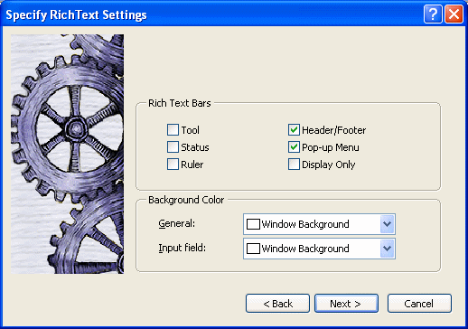
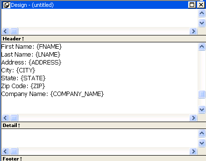
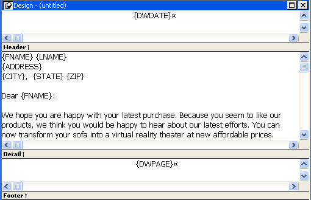
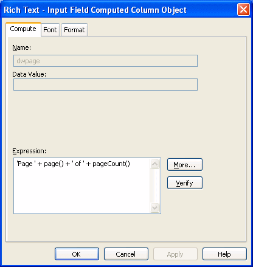

The RichText presentation style allows you to combine input fields that represent database columns with formatted text. This presentation style is useful for display-only reports, especially mail-merge documents. However, if you want to use the RichText DataWindow object for data entry, you can specify validation rules and display formats for the input fields.
In the Design view, you see the text along with placeholders called input fields:
{FNAME} {LNAME}
{COMPANY_NAME}
{ADDRESS}
{CITY}, {STATE} {ZIP}
Dear {FNAME}:
. . .
In the Preview view, the text is the same, but PowerBuilder replaces the input fields with values from the database:
Beth Reiser
AMF Corp.
1033 Whippany Road
New York, NY 10154
Dear Beth:
. . .
The formatted text acts like a document template. There is only one copy of the text. As the user scrolls from row to row, the data for the current row is inserted in the input fields and the user sees the document with the current data. If the user edits the text, the changes show up in every row of data.
In the RichText presentation style, an input field is associated with a column or computed field. It gets its value from the retrieved data or from the computed field's expression.
If an input field is not a computed field and its name does not match a column, there is no way to specify data for the input field.
There can be more than one copy of an input field in the rich text. In the sample above, there are two instances of the field FNAME. Each instance of the field displays the same data.
Not all the settings available in other DataWindow styles are available. You cannot apply code tables and edit styles, such as a DropDownDataWindow or EditMask, to input fields. You cannot use slide left and slide up settings to reposition input fields automatically. However, you can set the LineRemove property at runtime to achieve a similar effect.
 To create a RichText DataWindow object:
To create a RichText DataWindow object:
In the New dialog box, select RichText from the DataWindow tab and click OK.
Select data for the DataWindow object as you do for any DataWindow object.
If you want data to be retrieved into the Preview view automatically, select the Retrieve on Preview check box. For more information, see "Building a DataWindow object ".
Specify settings for the DataWindow object on the Specify RichText Settings screen, click Next, and then click Finish.

Table 30-1 describes the types of settings you can make for the RichText DataWindow object in the wizard.
After you click Finish in the wizard, you see input fields with their labels in the detail band in the Design view:

This sample shows how you might rearrange the input fields in a sales letter:

You can add text by typing directly in the Design view. You do not have to create text objects as you do for other DataWindow object styles. The DataWindow painter's StyleBar lets you apply formatting to selected text. The RichText toolbars are not available in the painter.
 Preview mode and editing text You cannot edit text in the Preview view, but you can edit
it when you preview the DataWindow object by selecting File>Run/Preview
from the menu bar. It may seem convenient to edit text in Preview
mode because the toolbars are available. However, any
changes you make to the text when previewing are temporary.
They are discarded as soon as you return to the Design view.
Preview mode and editing text You cannot edit text in the Preview view, but you can edit
it when you preview the DataWindow object by selecting File>Run/Preview
from the menu bar. It may seem convenient to edit text in Preview
mode because the toolbars are available. However, any
changes you make to the text when previewing are temporary.
They are discarded as soon as you return to the Design view.
If you have a rich text file, you can include it in the DataWindow object. In the Design view, you can insert text from a file into the detail, header, or footer band.
 To insert a file:
To insert a file:
Click in the text in any band to set the insertion point for the file.
Right-click in the Design view and select Insert File from the pop-up menu.
In the file selection dialog box, select the file you want to insert.
Only the body of the file is used. If the file has a header or footer, it is ignored.
You decide whether your RichText DataWindow object has a header and footer by checking Header/Footer in the wizard or Rich Text Object dialog box (described in "Formatting for RichText objects within the DataWindow object"). The decision to include a header and footer must be made at design time; it cannot be changed at runtime.
To display a page number or a date in the header or footer, you can insert the predefined computed fields Page n of n or Today(). You do not need to write scripts to set the values of these fields for each page, as you do for the RichTextEdit control.
Each type of object in a RichText DataWindow object has its own dialog box. When you select Properties from the pop-up menu, the dialog box you get depends on what is selected.
 Properties and Control List views The Properties and Control List views are not available for
RichText DataWindow objects. The painter uses the same property sheets
as are available to users when they run the DataWindow object, and controls
in RichText DataWindow objects cannot be manipulated in the same way as
in other DataWindow objects.
Properties and Control List views The Properties and Control List views are not available for
RichText DataWindow objects. The painter uses the same property sheets
as are available to users when they run the DataWindow object, and controls
in RichText DataWindow objects cannot be manipulated in the same way as
in other DataWindow objects.
Most of the objects in a RichText DataWindow object correspond to familiar objects like bitmaps, columns, and computed fields. You can also specify formatting for a temporary selected text object. In a RichText DataWindow object, the objects are:
This section describes how to select each type of object and access its dialog box. The user can access the property sheets too if you enable the Popup Menu option on the Rich Text Object's General dialog box.
Settings for the whole RichText DataWindow object include the values you specified in the wizard, as well as:
Use the following procedure to change settings:
 To set values for the RichText DataWindow object:
To set values for the RichText DataWindow object:
Make sure nothing is selected in the Design view by clicking to set the insertion point.
Right-click in the Design view and select Properties from the pop-up menu.
Click Help to get more information about a specific setting.
You can specify detailed font formatting for selected text. The selected text can be one character or many paragraphs.
If an input field is part of the selection, the font settings apply to it, too. A picture that is part of the selection ignores settings for the selected text object.
 To specify formatting for selected text:
To specify formatting for selected text:
Select the text you want to format.
Right-click in the Design view and select Properties from the pop-up menu.
The Selected Text Object dialog box displays. You can set:
There are also settings for selected paragraphs. You can display the Paragraph dialog box by pressing Ctrl+Shift+S. The user can double-click the ruler bar or press the key combination to display the same dialog box.
The user can change the default font by double-clicking on the toolbar or pressing Ctrl+Shift+D. You cannot change the default font in the painter.
An input field can be either a column or a computed field. Before you retrieve data, its value is shown as two question marks (??).
The text can include many copies of a named input field. The same data will appear in each instance of the input field.
The columns you select for the DataWindow object become input fields in the rich text. Because the input field's name matches the column name, PowerBuilder displays the column's data in the input field.
If an input field exists in the text, you can copy and paste it to create another copy. If you need to recreate a column input field that you deleted, use this procedure.
 To insert a column input field in the text:
To insert a column input field in the text:
Select Insert>Control>Column from the menu bar.
Click in the text where you want the column input field to appear.
PowerBuilder displays a list of the columns selected for the DataWindow object.
Select a column for the input field.
You select an input field by clicking inside it. A computed input field is selected when the whole field is highlighted.
 To set properties for an input field:
To set properties for an input field:
Click in the input field in Design view.
Display the pop-up menu and select Properties.
On the Font page, specify text formatting.
On the Format page, specify a display format.
On the Validation page, specify a validation rule for the column.
If there are multiple copies of an input field, the validation and format settings apply to all the copies. Background color on the Font page applies to all input fields. Other settings on the Font page apply to individual instances.
The user cannot change the format or validation rule. At runtime, these pages are not available in the dialog box.
Computed field input fields When you display the dialog box for a computed field, the settings are a little different. You can specify the input field name and its expression on the Compute page and there is no validation.
Data Value in preview For both columns and computed fields, you see a value in the Data Value box when you preview the DataWindow object. The user sees a value in the Data Value box when the current row has a value. For columns, users can change the value.
Computed fields have an expression that specifies the value of the computed field. In rich text, they are represented as input fields, too. You specify a name and an expression. The data value comes from evaluating the expression and cannot be edited.
 To define a computed field:
To define a computed field:
Select Insert>Control>Computed Field.
 Predefined computed fields You can also select one of the predefined computed fields
at the bottom of the menu. PowerBuilder provides several predefined
computed fields, but in a RichText DataWindow object, only the page number
(Page n of n) and today's date (Today())
are available.
Predefined computed fields You can also select one of the predefined computed fields
at the bottom of the menu. PowerBuilder provides several predefined
computed fields, but in a RichText DataWindow object, only the page number
(Page n of n) and today's date (Today())
are available.
Click in the text where you want the computed field to appear.
If you do not select a predefined computed field, PowerBuilder displays the dialog box for the computed field:

On the Compute page, name the computed field and specify its expression.
(Optional) On the Font page, specify text formatting.
(Optional) On the Format page, specify a display format.
If there are multiple copies of a computed field input field, the expression and format settings apply to all the copies. Font settings apply to individual instances. For more about computed field expressions and display formats, see Chapter 19, "Enhancing DataWindow Objects ."
You can include bitmaps (BMP, GIF, JPG, RLE, or WMF files) in a RichText DataWindow.
 To insert a picture in the rich text:
To insert a picture in the rich text:
Select Insert>Control>Picture from the menu bar.
Click in the text where you want the picture to appear.
PowerBuilder displays the Select Picture dialog box.
Select the file containing the picture.
A picture is selected when you can see a dashed outline in Design or Preview view. When the picture is part of a text selection, it displays with inverted colors.
You can change the size of a picture as a percentage of the original picture size. The allowable range for a size percent change is between 10 and 250 percent.
 To specify size settings for the picture:
To specify size settings for the picture:
Click on the picture in the Design or Preview view so you see its dashed-outline frame.
Right-click in the Design or Preview view and select Properties from the pop-up menu.
The Rich Text - Picture Object dialog box displays.
Change the percent of the original picture size in the Width and Height text boxes.
The picture expands or contracts according to the size percentage you selected.
To see what the RichText DataWindow object looks like with data, you can preview it in the Preview view or in preview mode.
 To preview the DataWindow object in preview mode:
To preview the DataWindow object in preview mode:
Select File>Run/Preview from the menu bar, or click the Run/Preview button on the PowerBar.
Select Rows>Retrieve from the menu bar.
 Retrieve on Preview If the RichText definition specifies Retrieve on Preview,
data is retrieved automatically when you open the Preview view or
preview the DataWindow object in preview mode.
Retrieve on Preview If the RichText definition specifies Retrieve on Preview,
data is retrieved automatically when you open the Preview view or
preview the DataWindow object in preview mode.
Data While previewing the DataWindow object in preview mode, or when focus is in the Preview view, you can use the scroll buttons in the Preview toolbar to move from row to row, and you can change data in the input fields. If you choose the Save Changes button on the toolbar, you will update the data in the database.
Text Any changes you make to the rich text in the Preview view will not be reflected in the Design view. Any changes that you want to keep must be made in the Design view, not in preview.
If the Display Only setting is checked, you cannot change text or data in the Preview view.
Print Preview displays a reduced view of one row of data as it would appear when printed.
 To see the DataWindow object in Print Preview:
To see the DataWindow object in Print Preview:
Click in the Preview view to make it the current view.
Select File>Print Preview.
In Print Preview, you can test different margin settings and scroll through the pages of the document.
You cannot scroll to view other rows of data.
Any changes you make to settings in Print Preview are discarded when you return to the Design view.
 Setting margins To specify permanent margin settings for the RichText DataWindow object, use
the Print Specifications page of the Rich Text Object dialog box.
Setting margins To specify permanent margin settings for the RichText DataWindow object, use
the Print Specifications page of the Rich Text Object dialog box.